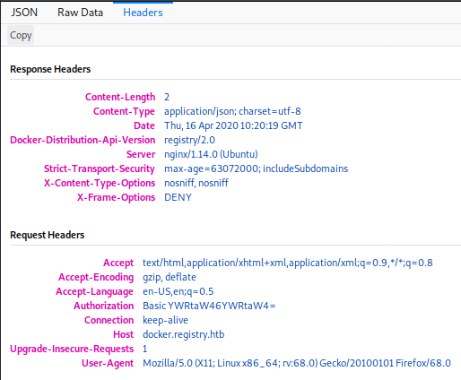

H3
As usual i started by connecting to the hack the box network with openvpn. After seeing that the Initialization sequence was completed i ran ifconfig command to see that i had an ip addres on the tun0 interface and pinged one of the htb machines to make sure i had a connection to it. For this i mostly targeted easy windows machines despite my lack of experience in windows hacking. I did because i have already done most of the easy linux machines on hack the box and i guess this is a good time to learn a thing or two about windows.
ServMon
Looking at the nmap results for 10.10.10.184 i see lots of ports open. Many of the ports are suggesting this machine is running windows. First one is port 21 for ftp with anonymous login allowed which seems like a very dangerous way of storing files because anyone could login with username “anonymous” without a password so i will look into that in a moment. There is also an ssh port open which could me an easy way of connectiong to the machine if i get valid credentials. Next one is port 80 runnig a webserver that i will take a look at as well. One odd port on this machine is 8443 which seems to be running NSClient++ as seen in the nmap scan. Navigating to this port only gave me a blank page so i moved on from that and learned more about it later. To do a full port scan i first used nmap -sS -p- 10.10.10.184 and after that i used cat, grep, cut and tr to get all of the port numbers into a file. I used cat to read the file, grep to get every line with the word “open”, cut to grab only the port number by specifying the delimited as “/” with -d and field number 1 with -f then tr to replace every new line with a comma and sent that into a file. In the nmap command i used $(cat ports) to give the content of the ports file i had created. In the ports file i only had to remove the last comma and i did it this way because nmap doesnt seem to have a way to specify a port file.

I started by looking into the ftp port by connecting to it and using “anonymous” as the username and suppying a blank password. In there i found a folder called “users” and in there were directories for users “Nathan” and “Nadine” so i took a note of these usernames. Both users had a file in their directory so i downloaded both of the files using the “get” command. The files were called “Confidential.txt” and “Notes to do.txt”. Reading both of the files i could see that Nadine had left a file called “Passwords.txt” on Nathans desktop and in Nathans to-do list i noticed that nathan had unfortunately changed his password NVMS. I decided to move on and take a look at the webserver now.
First as usual i tried usual credentials to login despite knowing that Nathan had changed the password. I had a feeling a directory traversal would work here but forgot this is running on windows so obviously i didnt manage to read /etc/passwd. Getting some more information on the target by searching for nvms in searchsploit revealed that there is a directory traversal as i suspected. Looking at this exploit using searchsploit -x showed a simple proof of concept of a basic directory traversal.
Knowing that Nadine had left a password file on Nathans desktop i intercepted a request to the page and did a simple directory traversal by adding “../” a few times to get to the root directory and navigated to Nathans desktop to get the "Passwords.txt" file
So now that i got the passwords i saved them to a file and initially tried all passwords on the login page manually with username nadine and nathan but then wanted to try and automate the process for learning purposes. I looked at the login request in burp and noticed it was sending the username and password in the head of the request as a base64 encoded string with the username and password like this: user:pass
I used a quick bash one-liner to take every password and encode it togerther with the username. I did this for both users. To actually sent this to the webserver i used wfuzz with -c for color, -L to follow rediredirects just in case, -p to specify burp as a proxy to make sure it is sending the correct data, -z to specify the file with the b64 encoded credentials, -H to specify the header with my payload being inserted instead of the string “FUZZ”. Just to be safe i added -b to include the cookie and -d to include the data and of course -u for the url. As far as i know this worked but since non of the passwords were supposed to work it returned the same amount of characters for each request. If i would have found working credentials the character count would have been diffrent. If i will find a working password for this later ill have to try and make sure this method worked as intended.
I actually came back to this the next day and i wanted try try making my own fuzzer for the sake of learning and having more control over what it does. It took me a while but i managed to do it with Python eventually. To do this i imported requests, sys and base64 modules. I specified the data to send and setup burp as a proxy for debugging/troubleshooting purposes. Added a simple if statement to explain the usage when used incorrectly in case i forget how to use this. For the fuzz function i added an argument called head to give the function the credentials to use in the headers. I used “with open(sys.argv[2])” to choose a wordlist as a commandline argument then the for loop simply loops through the passwords in the wordlist and adds them to the username which is also chosen as a commandline argument . Then it simply base64 encodes the credentials and sends them to the fuzz function as an argument. I later noticed that sometimes when the website resets the connection it still returns 200 OK so took a look at the data it was returning and noticed it says “Error” in the data. From there i just added an elif statement to notice this and retry the previous credentials until it either actually tries to login and finds that “fail” string in the response data or manages to login. This definitly wasnt faster than trying 5*2 credentials by hand but definetly worth it to learn to do.
Since the passwords didnt work on the website i decided to try ssh next. Thankfully this was much easier and quicker to do with hydra. I simply specified the user with -l and the password file with -P then just added the target ip and the service which is ssh. Doing this got nothing for the user Nathan but for Nadine i found a working password.
After logging in using ssh with the password i had found i navigated to Nadines desktop and found myself the user flag. There was also a winpeas.exe which is a windows privelege escalation script that some other hacker had left. Now to get the root flag will be a challenge since i dont have much experience hacking windows.
After a while of tring to figure out what to do i took a look in the program files directory and notices "NSClient++". I didnt know what that was but it seemed interesting so i looked it up using searchsploit and found out that the version 0.5.2.35 had a privelege escalation vulnerability. To check the version i ran "nscp test" in the NSClient++ directory. The NSClient version was the same so i took a look at this vulnerability with searcsploit -x. It seems clear this was explaining how to do this in GUI which i dont have access to but the general idea is to read the password that you can use to upload a script that runs a batch file that runs netcat to send reverse shell to the attacker. I started by reading the nsclient.ini file which revealed the admin password and allowed hosts. Seeing that only localhost is allowed and looking into this online it seems like ill have to either play around with port forwading or use curl to interact with the API and add my script. Ive been going at this NSClient for a while now so ill have to take a look at it later. Its a bit painful because the box seems to be resetting very frequently and is very laggy at the moment.
Registry
Looking at the nmap results for 10.10.10.159 i saw ports 22, 80 and 443 open. Port 22 is used for ssh so that might end up being usefull later. Ports 80 and 443 are running a webserver on http and https. Looking for nginx vulnerabilities i didnt find anything usefull. I did a full port scan later but that didnt give any more results.
Navigating to http://10.10.10.159/ only gave some kind of default nginx page and https was no diffrent.
I took a look at the ssl certificate in case there is something interesting there and i found hostnames “docker.registry.htb” and “registry.htb” so i added these to my /etc/hosts and tried navigating to “registry.htb” and “docker.registry.htb”. Registry.htb gave me the same default nginx page but “docker.registry.htb” gave me a blank page. I tried running gobuster on “registry.htb” and “docker.registry.htb” and got some results.

Starting with the results for “docker.registry.htb”. The odd looking results just get redirected to the 404 page but /v2 lead to a page asking for a username and password. I tried admin:admin and that got me in. Not sure what this page actually is but i have a feeling it will play a part in this later.
Looking at the results for the main page gobuster found /install and /bolt. Navigating to /bolt lead to somekind of sample site where i tried clicking all links to see where they lead but the only links that worked lead me to the official site for the bolt CMS which was obviously out of scope but can provide some valuable information. Navigating to /install just showed me some nonsensical characters so i assumed it was actually a file. I used wget to download this file and ran file against it to see what this file is supposed to be. It turned out to be a gzip compressed file so i renamed the install file to install.gz and tried to uncompress it. It gave me an unexpected end of file error but using zcat to read the file and direct the output to file worked despite the EOF error. Looking at the file it seems to contain somekind of certificate. Navigating to the link at the bottom of the file to some docker documentation that leads me to belive that the certificate in the file is the client certificate. I have no idea what to do with it right now so ill have to do some more work to figure that out.
I also did search this cms on searchsploit and found a bunch of vulnerabilities most intersesting being the one with authenticated remote code execution but that requires authentication so ill keep this in mind when ill continue doing this box sometime later.